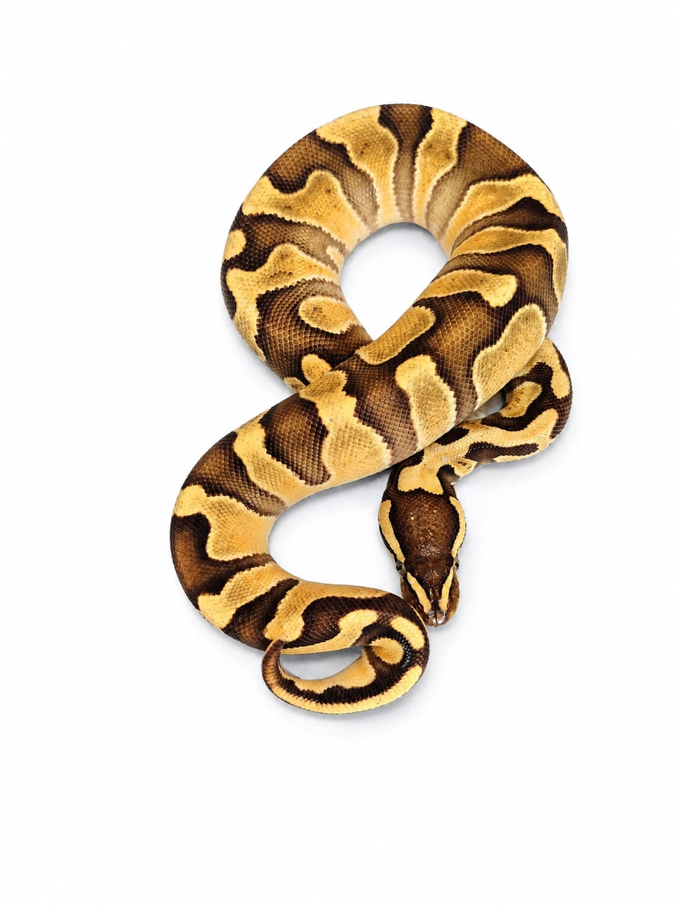

Sexo: Hembra
Morph: GHI, Enchi, Yellow Belly, Het Clown
Año: 2025
Peso: 160 g
Estado: Juvenil
Ejemplar seleccionado por tres genes dominantes incompletos y un gen recesivo portado de forma oculta. Destaca por intensidad de color, contraste y calidad de patrón.